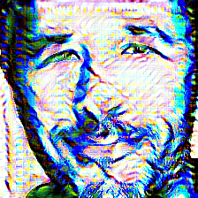
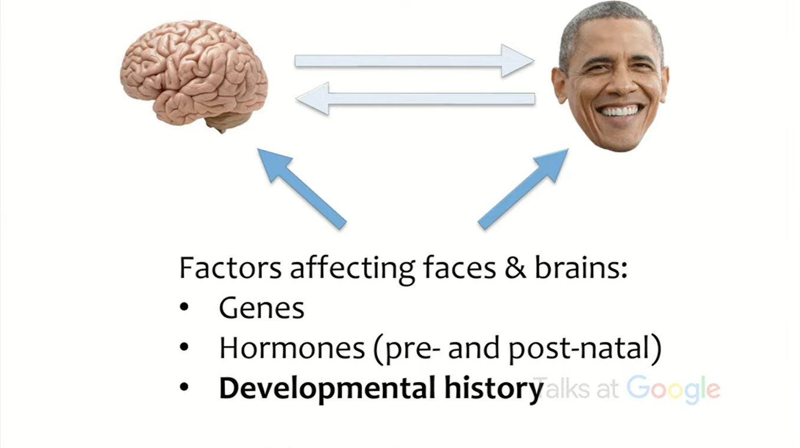

Here I talk about this research and depths and horizons I see: Facial
recognition technology can expose political orientation from naturalistic facial images This interesting research combining psychology and computer vision asks the question "Can machines learn political orientation from face images
of people?" It turns out that when right descriptors are extracted, and fed into a simple classification algorithm,
a pretty great estimation of political orientation from face images is possible. Human estimation is accurate 55% of the time, while
the method combining a face recognition algorithm (ResNet-50) and a classification algorithm is 73%.
There had been a phase in machine learning progress were people were not convinced that
a method such as feature extraction could mean something, be useful in cases. Today, it obviously is, and indeed new models are
now hoped to be "good feature extractors"; an image classification model extracting useful cues for estimating political orientation,
in our case. This is very exciting, and you can find a brief analysis of intermediate activations in ResNet-50 for a face image
here in my repo.
Interpreting features however, must be
distinguished from data and activations. There are many concepts in this new field, a post-hoc approach called Inceptionism (altering the input through gradient descent to
enchance the activations of certain nodes) applied to VGGFace2-Resnet50 is available here
in my repo for neural network interpretability.
You can find more about
"feature visualization" here: Feature Visualization - Distill
First I will explain the psychology surrounding the task, since what machine learning tries to unveil is nothing but the principles of the
domain it plays in.
Obviously, understanding someone means understanding their psychology, and psychology is not something tangible but something
which you can observe its manifestations; even before the internet we had lots of ways to get an idea of people's characteristics by looking at their styles or
footprints (how they design their room and etc.) With the internet, since it is very comfortably used, people
unknowingly leave digital footprints that pile up to a giant amount of available data. Machine learning approach to these footprints created
many fields which deal with human psychology to understand them and operate with that knowledge.
Here we will talk about what lays under the awe of human face that can say a lot.
Basically, we're dealing with mechanics of a triangle: mind - face - few other factors affecting faces & brains.
Here are some examples for different cause - effect pairs in the triangle: A cheerful person will develop smile-lines, an introvert is exposed to sun
less than an extrovert; a pretty face is socially fortunate, hence the possessor of the pretty face is becomes an extrovert; and of course, genes
and hormones and developmental processs effects brain and face.
Predictive models with face images built not just for political orientation, but for other features of people such as personal traits, self-monitoring,
satisfaciton with life, depression, limbic languidness and etc., and these models too perform better than human average.
So this question we asked is actually searching for something that really lurks in the secret of human face. At this particular research, images used
are faces from profile pictures, so they can contain makeup and etc. that can help in the estimation of the political orientation. Surprising conclusion
is that the same research is done with standardised face images, so now it's purely about facial cues, and model gave even better results than this one.
Three machine learning models are used in this inference; a face detector, a face recognition algorithm and a classification algorithm.
Detecting the face is done with Face++ in the research; faces in images are detected and simply cropped according to the face-box the algortihm provided.
Then these are resized to 224x224 pixels, so now input data for the face recognition algorithm are tensors of shape (224, 224, 3). Face
recognition algorithm is ResNet-50 pretrained with VGGFace2 dataset.
Face recognition algorithm is purposed to recognize the class face data belongs to, so actual objective of the ResNet-50 algorithm is multiclass
classification of people. Here, we truncate the last (dense classification) layer and repurpose the algorithm to give facial descriptors that are optimized
to recognize faces. Features it learned to accomplish that
objective helps in understanding political orientation of the faces by being used as input for logistic regression.
tolga recep uçar

Psychology

The End of Privacy | Michal Kosinski | Talks at Google
Machine Learning
2022